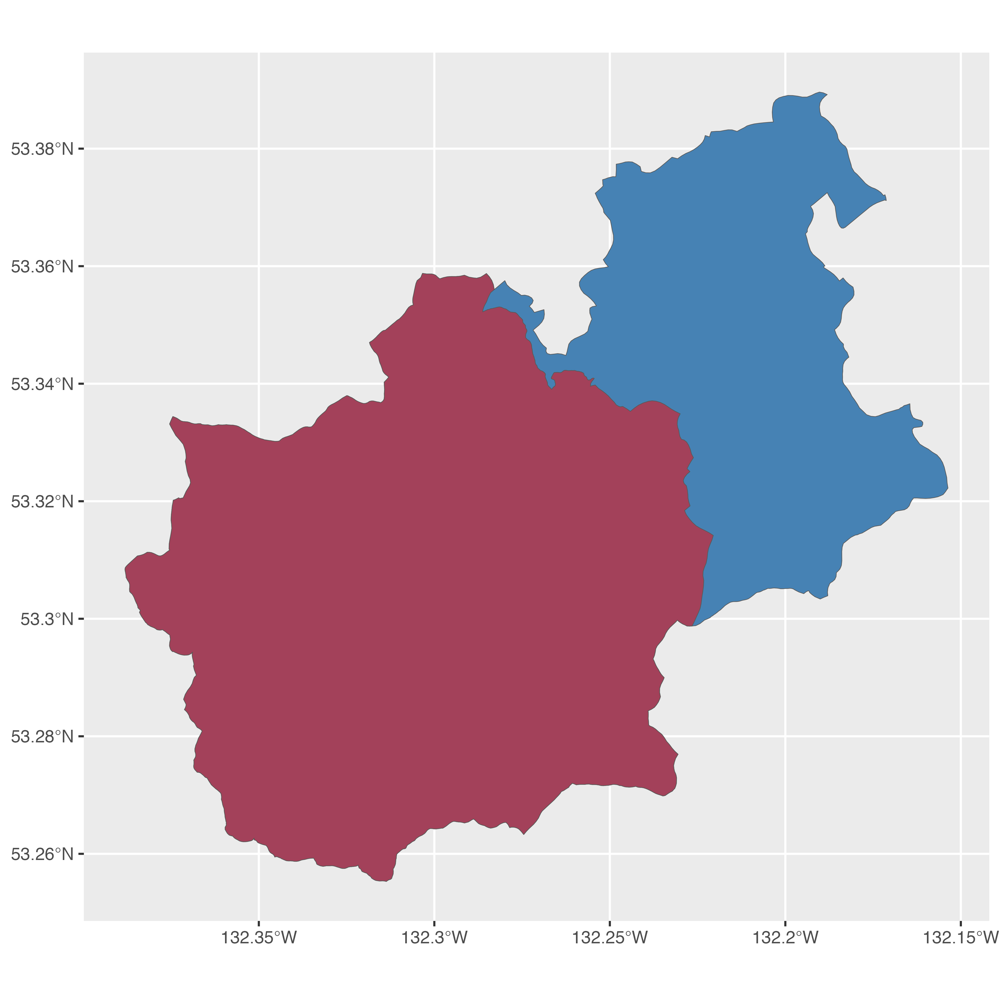

In addition to getting and filtering Freshwater Atlas data, fwapgr has a few functions that perform useful spatial operations.
fwa_nearest_stream()fwa_watershed_at_measure()fwa_stream_at_measure()fwa_watershed_at_hex()In this article, we’ll explore a couple of these.
Let’s start with a completely unrealistic scenario. You are out picking chanterelle mushrooms on the back-roads of Queen Charlotte, Haida Gwaii, and suddenly find yourself lost and thirsty. Luckily, you have a computer and decent enough cell service for an internet connection. Let’s find the two nearest rivers to your location (coordinates are 53.36/-132.26).
coords <- c(x = -132.26, y = 53.36) nearest <- fwapgr::fwa_nearest_stream(x = coords["x"], y = coords["y"], srid = 4326, num_features = 2) nearest[c("distance_to_stream", "gnis_name", "blue_line_key")] #> Simple feature collection with 2 features and 3 fields #> geometry type: POINT #> dimension: XY #> bbox: xmin: -132.2646 ymin: 53.35424 xmax: -132.2547 ymax: 53.35672 #> geographic CRS: WGS 84 #> distance_to_stream gnis_name blue_line_key geometry #> 1 508.4116 <NA> 360824839 POINT (-132.2547 53.35672) #> 2 711.3777 Yakoun River 360881586 POINT (-132.2646 53.35424)
The nearest stream is around 500m away, but it is unnamed so it might not be very big. The Yakoun River is only around 700m away though!
Next, let’s find the area of the Yakoun river watershed upstream of the nearest point to your location. We can do this with the fwa_watershed_at_measure function, which accepts input of stream (blue_line_key) and distance to stream mouth (downstream_route_measure). Let’s also compare this with the watershed area if we walk 2 kilometers upstream.
# focus on Yakoun River nearest <- nearest[which(nearest$gnis_name == "Yakoun River"),] blk <- nearest$blue_line_key drm <- nearest$downstream_route_measure wshed <- fwapgr::fwa_watershed_at_measure(blk, downstream_route_measure = drm) wshed_2km <- fwapgr::fwa_watershed_at_measure(blk, downstream_route_measure = drm + 2000) wshed$area_ha #> [1] 12020.75 wshed_2km$area_ha #> [1] 8183.69
Finally, let’s visualize these watersheds.
ggplot2::ggplot() + ggplot2::geom_sf(data = wshed, lwd = 0.15, fill = "steelblue") + ggplot2::geom_sf(data = wshed_2km, lwd = 0.15, fill = 'red', alpha = 0.5)
